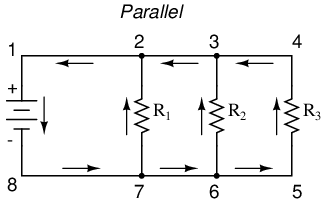
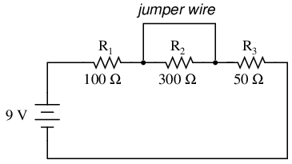
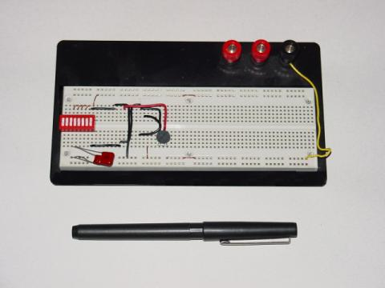
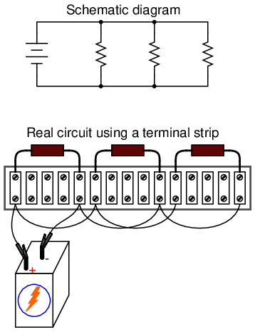

Circuits consisting of just one battery and one load resistance are very simple to analyze, but they are not often found in practical applications. Usually, we find circuits where more than two components are connected together.
There are two basic ways in which to connect more than two circuit components: series and parallel. First, an example of a series circuit:

Here, we have three resistors (labeled R1, R2, and R3), connected in a long chain from one terminal of the battery to the other. (It should be noted that the subscript labeling -- those little numbers to the lower-right of the letter "R" -- are unrelated to the resistor values in ohms. They serve only to identify one resistor from another.) The defining characteristic of a series circuit is that there is only one path for electrons to flow. In this circuit the electrons flow in a counter-clockwise direction, from point 4 to point 3 to point 2 to point 1 and back around to 4.
Now, let's look at the other type of circuit, a parallel configuration:

Again, we have three resistors, but this time they form more than one continuous path for electrons to flow. There's one path from 8 to 7 to 2 to 1 and back to 8 again. There's another from 8 to 7 to 6 to 3 to 2 to 1 and back to 8 again. And then there's a third path from 8 to 7 to 6 to 5 to 4 to 3 to 2 to 1 and back to 8 again. Each individual path (through R1, R2, and R3) is called a branch.
The defining characteristic of a parallel circuit is that all components are connected between the same set of electrically common points. Looking at the schematic diagram, we see that points 1, 2, 3, and 4 are all electrically common. So are points 8, 7, 6, and 5. Note that all resistors as well as the battery are connected between these two sets of points.
And, of course, the complexity doesn't stop at simple series and parallel either! We can have circuits that are a combination of series and parallel, too:
In this circuit, we have two loops for electrons to flow through: one from 6 to 5 to 2 to 1 and back to 6 again, and another from 6 to 5 to 4 to 3 to 2 to 1 and back to 6 again. Notice how both current paths go through R1 (from point 2 to point 1). In this configuration, we'd say that R2 and R3 are in parallel with each other, while R1 is in series with the parallel combination of R2 and R3.
This is just a preview of things to come. Don't worry! We'll explore all these circuit configurations in detail, one at a time!
The basic idea of a "series" connection is that components are connected end-to-end in a line to form a single path for electrons to flow:
The basic idea of a "parallel" connection, on the other hand, is that all components are connected across each other's leads. In a purely parallel circuit, there are never more than two sets of electrically common points, no matter how many components are connected. There are many paths for electrons to flow, but only one voltage across all components:
Series and parallel resistor configurations have very different electrical properties. We'll explore the properties of each configuration in the sections to come.
Let's start with a series circuit consisting of three resistors and a single battery:
The first principle to understand about series circuits is that the amount of current is the same through any component in the circuit. This is because there is only one path for electrons to flow in a series circuit, and because free electrons flow through conductors like marbles in a tube, the rate of flow (marble speed) at any point in the circuit (tube) at any specific point in time must be equal.
From the way that the 9 volt battery is arranged, we can tell that the electrons in this circuit will flow in a counter-clockwise direction, from point 4 to 3 to 2 to 1 and back to 4. However, we have one source of voltage and three resistances. How do we use Ohm's Law here?
An important caveat to Ohm's Law is that all quantities (voltage, current, resistance, and power) must relate to each other in terms of the same two points in a circuit. For instance, with a single-battery, single-resistor circuit, we could easily calculate any quantity because they all applied to the same two points in the circuit:

Since points 1 and 2 are connected together with wire of negligible resistance, as are points 3 and 4, we can say that point 1 is electrically common to point 2, and that point 3 is electrically common to point 4. Since we know we have 9 volts of electromotive force between points 1 and 4 (directly across the battery), and since point 2 is common to point 1 and point 3 common to point 4, we must also have 9 volts between points 2 and 3 (directly across the resistor). Therefore, we can apply Ohm's Law (I = E/R) to the current through the resistor, because we know the voltage (E) across the resistor and the resistance (R) of that resistor. All terms (E, I, R) apply to the same two points in the circuit, to that same resistor, so we can use the Ohm's Law formula with no reservation.
However, in circuits containing more than one resistor, we must be careful in how we apply Ohm's Law. In the three-resistor example circuit below, we know that we have 9 volts between points 1 and 4, which is the amount of electromotive force trying to push electrons through the series combination of R1, R2, and R3. However, we cannot take the value of 9 volts and divide it by 3k, 10k or 5k Ω to try to find a current value, because we don't know how much voltage is across any one of those resistors, individually.
The figure of 9 volts is a total quantity for the whole circuit, whereas the figures of 3k, 10k, and 5k Ω are individual quantities for individual resistors. If we were to plug a figure for total voltage into an Ohm's Law equation with a figure for individual resistance, the result would not relate accurately to any quantity in the real circuit.
For R1, Ohm's Law will relate the amount of voltage across R1 with the current through R1, given R1's resistance, 3kΩ:
But, since we don't know the voltage across R1 (only the total voltage supplied by the battery across the three-resistor series combination) and we don't know the current through R1, we can't do any calculations with either formula. The same goes for R2 and R3: we can apply the Ohm's Law equations if and only if all terms are representative of their respective quantities between the same two points in the circuit.
So what can we do? We know the voltage of the source (9 volts) applied across the series combination of R1, R2, and R3, and we know the resistances of each resistor, but since those quantities aren't in the same context, we can't use Ohm's Law to determine the circuit current. If only we knew what the total resistance was for the circuit: then we could calculate total current with our figure for total voltage (I=E/R).
This brings us to the second principle of series circuits: the total resistance of any series circuit is equal to the sum of the individual resistances. This should make intuitive sense: the more resistors in series that the electrons must flow through, the more difficult it will be for those electrons to flow. In the example problem, we had a 3 kΩ, 10 kΩ, and 5 kΩ resistor in series, giving us a total resistance of 18 kΩ:
In essence, we've calculated the equivalent resistance of R1, R2, and R3 combined. Knowing this, we could re-draw the circuit with a single equivalent resistor representing the series combination of R1, R2, and R3:
Now we have all the necessary information to calculate circuit current, because we have the voltage between points 1 and 4 (9 volts) and the resistance between points 1 and 4 (18 kΩ):
Knowing that current is equal through all components of a series circuit (and we just determined the current through the battery), we can go back to our original circuit schematic and note the current through each component:
Now that we know the amount of current through each resistor, we can use Ohm's Law to determine the voltage drop across each one (applying Ohm's Law in its proper context):
Notice the voltage drops across each resistor, and how the sum of the voltage drops (1.5 + 5 + 2.5) is equal to the battery (supply) voltage: 9 volts. This is the third principle of series circuits: that the supply voltage is equal to the sum of the individual voltage drops.
However, the method we just used to analyze this simple series circuit can be streamlined for better understanding. By using a table to list all voltages, currents, and resistances in the circuit, it becomes very easy to see which of those quantities can be properly related in any Ohm's Law equation:
The rule with such a table is to apply Ohm's Law only to the values within each vertical column. For instance, ER1 only with IR1 and R1; ER2 only with IR2 and R2; etc. You begin your analysis by filling in those elements of the table that are given to you from the beginning:

As you can see from the arrangement of the data, we can't apply the 9 volts of ET (total voltage) to any of the resistances (R1, R2, or R3) in any Ohm's Law formula because they're in different columns. The 9 volts of battery voltage is not applied directly across R1, R2, or R3. However, we can use our "rules" of series circuits to fill in blank spots on a horizontal row. In this case, we can use the series rule of resistances to determine a total resistance from the sum of individual resistances:
Now, with a value for total resistance inserted into the rightmost ("Total") column, we can apply Ohm's Law of I=E/R to total voltage and total resistance to arrive at a total current of 500 µA:
Then, knowing that the current is shared equally by all components of a series circuit (another "rule" of series circuits), we can fill in the currents for each resistor from the current figure just calculated:
Finally, we can use Ohm's Law to determine the voltage drop across each resistor, one column at a time:
Just for fun, we can use a computer to analyze this very same circuit automatically. It will be a good way to verify our calculations and also become more familiar with computer analysis. First, we have to describe the circuit to the computer in a format recognizable by the software. The SPICE program we'll be using requires that all electrically unique points in a circuit be numbered, and component placement is understood by which of those numbered points, or "nodes," they share. For clarity, I numbered the four corners of our example circuit 1 through 4. SPICE, however, demands that there be a node zero somewhere in the circuit, so I'll re-draw the circuit, changing the numbering scheme slightly:
All I've done here is re-numbered the lower-left corner of the circuit 0 instead of 4. Now, I can enter several lines of text into a computer file describing the circuit in terms SPICE will understand, complete with a couple of extra lines of code directing the program to display voltage and current data for our viewing pleasure. This computer file is known as the netlist in SPICE terminology:
series circuit v1 1 0 r1 1 2 3k r2 2 3 10k r3 3 0 5k .dc v1 9 9 1 .print dc v(1,2) v(2,3) v(3,0) .end
Now, all I have to do is run the SPICE program to process the netlist and output the results:
v1 v(1,2) v(2,3) v(3) i(v1) 9.000E+00 1.500E+00 5.000E+00 2.500E+00 -5.000E-04
This printout is telling us the battery voltage is 9 volts, and the voltage drops across R1, R2, and R3 are 1.5 volts, 5 volts, and 2.5 volts, respectively. Voltage drops across any component in SPICE are referenced by the node numbers the component lies between, so v(1,2) is referencing the voltage between nodes 1 and 2 in the circuit, which are the points between which R1 is located. The order of node numbers is important: when SPICE outputs a figure for v(1,2), it regards the polarity the same way as if we were holding a voltmeter with the red test lead on node 1 and the black test lead on node 2.
We also have a display showing current (albeit with a negative value) at 0.5 milliamps, or 500 microamps. So our mathematical analysis has been vindicated by the computer. This figure appears as a negative number in the SPICE analysis, due to a quirk in the way SPICE handles current calculations.
In summary, a series circuit is defined as having only one path for electrons to flow. From this definition, three rules of series circuits follow: all components share the same current; resistances add to equal a larger, total resistance; and voltage drops add to equal a larger, total voltage. All of these rules find root in the definition of a series circuit. If you understand that definition fully, then the rules are nothing more than footnotes to the definition.
Let's start with a parallel circuit consisting of three resistors and a single battery:
The first principle to understand about parallel circuits is that the voltage is equal across all components in the circuit. This is because there are only two sets of electrically common points in a parallel circuit, and voltage measured between sets of common points must always be the same at any given time. Therefore, in the above circuit, the voltage across R1 is equal to the voltage across R2 which is equal to the voltage across R3 which is equal to the voltage across the battery. This equality of voltages can be represented in another table for our starting values:
Just as in the case of series circuits, the same caveat for Ohm's Law applies: values for voltage, current, and resistance must be in the same context in order for the calculations to work correctly. However, in the above example circuit, we can immediately apply Ohm's Law to each resistor to find its current because we know the voltage across each resistor (9 volts) and the resistance of each resistor:
At this point we still don't know what the total current or total resistance for this parallel circuit is, so we can't apply Ohm's Law to the rightmost ("Total") column. However, if we think carefully about what is happening it should become apparent that the total current must equal the sum of all individual resistor ("branch") currents:
As the total current exits the negative (-) battery terminal at point 8 and travels through the circuit, some of the flow splits off at point 7 to go up through R1, some more splits off at point 6 to go up through R2, and the remainder goes up through R3. Like a river branching into several smaller streams, the combined flow rates of all streams must equal the flow rate of the whole river. The same thing is encountered where the currents through R1, R2, and R3 join to flow back to the positive terminal of the battery (+) toward point 1: the flow of electrons from point 2 to point 1 must equal the sum of the (branch) currents through R1, R2, and R3.
This is the second principle of parallel circuits: the total circuit current is equal to the sum of the individual branch currents. Using this principle, we can fill in the IT spot on our table with the sum of IR1, IR2, and IR3:
Finally, applying Ohm's Law to the rightmost ("Total") column, we can calculate the total circuit resistance:
Please note something very important here. The total circuit resistance is only 625 Ω: less than any one of the individual resistors. In the series circuit, where the total resistance was the sum of the individual resistances, the total was bound to be greater than any one of the resistors individually. Here in the parallel circuit, however, the opposite is true: we say that the individual resistances diminish rather than add to make the total. This principle completes our triad of "rules" for parallel circuits, just as series circuits were found to have three rules for voltage, current, and resistance. Mathematically, the relationship between total resistance and individual resistances in a parallel circuit looks like this:

The same basic form of equation works for any number of resistors connected together in parallel, just add as many 1/R terms on the denominator of the fraction as needed to accommodate all parallel resistors in the circuit.
Just as with the series circuit, we can use computer analysis to double-check our calculations. First, of course, we have to describe our example circuit to the computer in terms it can understand. I'll start by re-drawing the circuit:
Once again we find that the original numbering scheme used to identify points in the circuit will have to be altered for the benefit of SPICE. In SPICE, all electrically common points must share identical node numbers. This is how SPICE knows what's connected to what, and how. In a simple parallel circuit, all points are electrically common in one of two sets of points. For our example circuit, the wire connecting the tops of all the components will have one node number and the wire connecting the bottoms of the components will have the other. Staying true to the convention of including zero as a node number, I choose the numbers 0 and 1:
An example like this makes the rationale of node numbers in SPICE fairly clear to understand. By having all components share common sets of numbers, the computer "knows" they're all connected in parallel with each other.
In order to display branch currents in SPICE, we need to insert zero-voltage sources in line (in series) with each resistor, and then reference our current measurements to those sources. For whatever reason, the creators of the SPICE program made it so that current could only be calculated through a voltage source. This is a somewhat annoying demand of the SPICE simulation program. With each of these "dummy" voltage sources added, some new node numbers must be created to connect them to their respective branch resistors:

The dummy voltage sources are all set at 0 volts so as to have no impact on the operation of the circuit. The circuit description file, or netlist, looks like this:
Parallel circuit v1 1 0 r1 2 0 10k r2 3 0 2k r3 4 0 1k vr1 1 2 dc 0 vr2 1 3 dc 0 vr3 1 4 dc 0 .dc v1 9 9 1 .print dc v(2,0) v(3,0) v(4,0) .print dc i(vr1) i(vr2) i(vr3) .end
Running the computer analysis, we get these results (I've annotated the printout with descriptive labels):
v1 v(2) v(3) v(4) 9.000E+00 9.000E+00 9.000E+00 9.000E+00 battery R1 voltage R2 voltage R3 voltage voltage
v1 i(vr1) i(vr2) i(vr3) 9.000E+00 9.000E-04 4.500E-03 9.000E-03 battery R1 current R2 current R3 current voltage
These values do indeed match those calculated through Ohm's Law earlier: 0.9 mA for IR1, 4.5 mA for IR2, and 9 mA for IR3. Being connected in parallel, of course, all resistors have the same voltage dropped across them (9 volts, same as the battery).
In summary, a parallel circuit is defined as one where all components are connected between the same set of electrically common points. Another way of saying this is that all components are connected across each other's terminals. From this definition, three rules of parallel circuits follow: all components share the same voltage; resistances diminish to equal a smaller, total resistance; and branch currents add to equal a larger, total current. Just as in the case of series circuits, all of these rules find root in the definition of a parallel circuit. If you understand that definition fully, then the rules are nothing more than footnotes to the definition.
When students first see the parallel resistance equation, the natural question to ask is, "Where did that thing come from?" It is truly an odd piece of arithmetic, and its origin deserves a good explanation.
Resistance, by definition, is the measure of friction a component presents to the flow of electrons through it. Resistance is symbolized by the capital letter "R" and is measured in the unit of "ohm." However, we can also think of this electrical property in terms of its inverse: how easy it is for electrons to flow through a component, rather than how difficult. If resistance is the word we use to symbolize the measure of how difficult it is for electrons to flow, then a good word to express how easy it is for electrons to flow would be conductance.
Mathematically, conductance is the reciprocal, or inverse, of resistance:
The greater the resistance, the less the conductance, and vice versa. This should make intuitive sense, resistance and conductance being opposite ways to denote the same essential electrical property. If two components' resistances are compared and it is found that component "A" has one-half the resistance of component "B," then we could alternatively express this relationship by saying that component "A" is twice as conductive as component "B." If component "A" has but one-third the resistance of component "B," then we could say it is three times more conductive than component "B," and so on.
Carrying this idea further, a symbol and unit were created to represent conductance. The symbol is the capital letter "G" and the unit is the mho, which is "ohm" spelled backwards (and you didn't think electronics engineers had any sense of humor!). Despite its appropriateness, the unit of the mho was replaced in later years by the unit of siemens (abbreviated by the capital letter "S"). This decision to change unit names is reminiscent of the change from the temperature unit of degrees Centigrade to degrees Celsius, or the change from the unit of frequency c.p.s. (cycles per second) to Hertz. If you're looking for a pattern here, Siemens, Celsius, and Hertz are all surnames of famous scientists, the names of which, sadly, tell us less about the nature of the units than the units' original designations.
As a footnote, the unit of siemens is never expressed without the last letter "s." In other words, there is no such thing as a unit of "siemen" as there is in the case of the "ohm" or the "mho." The reason for this is the proper spelling of the respective scientists' surnames. The unit for electrical resistance was named after someone named "Ohm," whereas the unit for electrical conductance was named after someone named "Siemens," therefore it would be improper to "singularize" the latter unit as its final "s" does not denote plurality.
Back to our parallel circuit example, we should be able to see that multiple paths (branches) for current reduces total resistance for the whole circuit, as electrons are able to flow easier through the whole network of multiple branches than through any one of those branch resistances alone. In terms of resistance, additional branches result in a lesser total (current meets with less opposition). In terms of conductance, however, additional branches results in a greater total (electrons flow with greater conductance):
Total parallel resistance is less than any one of the individual branch resistances because parallel resistors resist less together than they would separately:

Total parallel conductance is greater than any of the individual branch conductances because parallel resistors conduct better together than they would separately:
To be more precise, the total conductance in a parallel circuit is equal to the sum of the individual conductances:
If we know that conductance is nothing more than the mathematical reciprocal (1/x) of resistance, we can translate each term of the above formula into resistance by substituting the reciprocal of each respective conductance:
Solving the above equation for total resistance (instead of the reciprocal of total resistance), we can invert (reciprocate) both sides of the equation:
So, we arrive at our cryptic resistance formula at last! Conductance (G) is seldom used as a practical measurement, and so the above formula is a common one to see in the analysis of parallel circuits.
When calculating the power dissipation of resistive components, use any one of the three power equations to derive the answer from values of voltage, current, and/or resistance pertaining to each component:
This is easily managed by adding another row to our familiar table of voltages, currents, and resistances:
Power for any particular table column can be found by the appropriate Ohm's Law equation (appropriate based on what figures are present for E, I, and R in that column).
An interesting rule for total power versus individual power is that it is additive for any configuration of circuit: series, parallel, series/parallel, or otherwise. Power is a measure of rate of work, and since power dissipated must equal the total power applied by the source(s) (as per the Law of Conservation of Energy in physics), circuit configuration has no effect on the mathematics.
One of the most common mistakes made by beginning electronics students in their application of Ohm's Laws is mixing the contexts of voltage, current, and resistance. In other words, a student might mistakenly use a value for I through one resistor and the value for E across a set of interconnected resistors, thinking that they'll arrive at the resistance of that one resistor. Not so! Remember this important rule: The variables used in Ohm's Law equations must be common to the same two points in the circuit under consideration. I cannot overemphasize this rule. This is especially important in series-parallel combination circuits where nearby components may have different values for both voltage drop and current.
When using Ohm's Law to calculate a variable pertaining to a single component, be sure the voltage you're referencing is solely across that single component and the current you're referencing is solely through that single component and the resistance you're referencing is solely for that single component. Likewise, when calculating a variable pertaining to a set of components in a circuit, be sure that the voltage, current, and resistance values are specific to that complete set of components only! A good way to remember this is to pay close attention to the two points terminating the component or set of components being analyzed, making sure that the voltage in question is across those two points, that the current in question is the electron flow from one of those points all the way to the other point, that the resistance in question is the equivalent of a single resistor between those two points, and that the power in question is the total power dissipated by all components between those two points.
The "table" method presented for both series and parallel circuits in this chapter is a good way to keep the context of Ohm's Law correct for any kind of circuit configuration. In a table like the one shown below, you are only allowed to apply an Ohm's Law equation for the values of a single vertical column at a time:
Deriving values horizontally across columns is allowable as per the principles of series and parallel circuits:
Not only does the "table" method simplify the management of all relevant quantities, it also facilitates cross-checking of answers by making it easy to solve for the original unknown variables through other methods, or by working backwards to solve for the initially given values from your solutions. For example, if you have just solved for all unknown voltages, currents, and resistances in a circuit, you can check your work by adding a row at the bottom for power calculations on each resistor, seeing whether or not all the individual power values add up to the total power. If not, then you must have made a mistake somewhere! While this technique of "cross-checking" your work is nothing new, using the table to arrange all the data for the cross-check(s) results in a minimum of confusion.
The job of a technician frequently entails "troubleshooting" (locating and correcting a problem) in malfunctioning circuits. Good troubleshooting is a demanding and rewarding effort, requiring a thorough understanding of the basic concepts, the ability to formulate hypotheses (proposed explanations of an effect), the ability to judge the value of different hypotheses based on their probability (how likely one particular cause may be over another), and a sense of creativity in applying a solution to rectify the problem. While it is possible to distill these skills into a scientific methodology, most practiced troubleshooters would agree that troubleshooting involves a touch of art, and that it can take years of experience to fully develop this art.
An essential skill to have is a ready and intuitive understanding of how component faults affect circuits in different configurations. We will explore some of the effects of component faults in both series and parallel circuits here, then to a greater degree at the end of the "Series-Parallel Combination Circuits" chapter.
Let's start with a simple series circuit:
With all components in this circuit functioning at their proper values, we can mathematically determine all currents and voltage drops:
Now let us suppose that R2 fails shorted. Shorted means that the resistor now acts like a straight piece of wire, with little or no resistance. The circuit will behave as though a "jumper" wire were connected across R2 (in case you were wondering, "jumper wire" is a common term for a temporary wire connection in a circuit). What causes the shorted condition of R2 is no matter to us in this example; we only care about its effect upon the circuit:

With R2 shorted, either by a jumper wire or by an internal resistor failure, the total circuit resistance will decrease. Since the voltage output by the battery is a constant (at least in our ideal simulation here), a decrease in total circuit resistance means that total circuit current must increase:
As the circuit current increases from 20 milliamps to 60 milliamps, the voltage drops across R1 and R3 (which haven't changed resistances) increase as well, so that the two resistors are dropping the whole 9 volts. R2, being bypassed by the very low resistance of the jumper wire, is effectively eliminated from the circuit, the resistance from one lead to the other having been reduced to zero. Thus, the voltage drop across R2, even with the increased total current, is zero volts.
On the other hand, if R2 were to fail "open" -- resistance increasing to nearly infinite levels -- it would also create wide-reaching effects in the rest of the circuit:
With R2 at infinite resistance and total resistance being the sum of all individual resistances in a series circuit, the total current decreases to zero. With zero circuit current, there is no electron flow to produce voltage drops across R1 or R3. R2, on the other hand, will manifest the full supply voltage across its terminals.
We can apply the same before/after analysis technique to parallel circuits as well. First, we determine what a "healthy" parallel circuit should behave like.
Supposing that R2 opens in this parallel circuit, here's what the effects will be:

Notice that in this parallel circuit, an open branch only affects the current through that branch and the circuit's total current. Total voltage -- being shared equally across all components in a parallel circuit, will be the same for all resistors. Due to the fact that the voltage source's tendency is to hold voltage constant, its voltage will not change, and being in parallel with all the resistors, it will hold all the resistors' voltages the same as they were before: 9 volts. Being that voltage is the only common parameter in a parallel circuit, and the other resistors haven't changed resistance value, their respective branch currents remain unchanged.
This is what happens in a household lamp circuit: all lamps get their operating voltage from power wiring arranged in a parallel fashion. Turning one lamp on and off (one branch in that parallel circuit closing and opening) doesn't affect the operation of other lamps in the room, only the current in that one lamp (branch circuit) and the total current powering all the lamps in the room:
In an ideal case (with perfect voltage sources and zero-resistance connecting wire), shorted resistors in a simple parallel circuit will also have no effect on what's happening in other branches of the circuit. In real life, the effect is not quite the same, and we'll see why in the following example:
A shorted resistor (resistance of 0 Ω) would theoretically draw infinite current from any finite source of voltage (I=E/0). In this case, the zero resistance of R2 decreases the circuit total resistance to zero Ω as well, increasing total current to a value of infinity. As long as the voltage source holds steady at 9 volts, however, the other branch currents (IR1 and IR3) will remain unchanged.
The critical assumption in this "perfect" scheme, however, is that the voltage supply will hold steady at its rated voltage while supplying an infinite amount of current to a short-circuit load. This is simply not realistic. Even if the short has a small amount of resistance (as opposed to absolutely zero resistance), no real voltage source could arbitrarily supply a huge overload current and maintain steady voltage at the same time. This is primarily due to the internal resistance intrinsic to all electrical power sources, stemming from the inescapable physical properties of the materials they're constructed of:
These internal resistances, small as they may be, turn our simple parallel circuit into a series-parallel combination circuit. Usually, the internal resistances of voltage sources are low enough that they can be safely ignored, but when high currents resulting from shorted components are encountered, their effects become very noticeable. In this case, a shorted R2 would result in almost all the voltage being dropped across the internal resistance of the battery, with almost no voltage left over for resistors R1, R2, and R3:
Suffice it to say, intentional direct short-circuits across the terminals of any voltage source is a bad idea. Even if the resulting high current (heat, flashes, sparks) causes no harm to people nearby, the voltage source will likely sustain damage, unless it has been specifically designed to handle short-circuits, which most voltage sources are not.
Eventually in this book I will lead you through the analysis of circuits without the use of any numbers, that is, analyzing the effects of component failure in a circuit without knowing exactly how many volts the battery produces, how many ohms of resistance is in each resistor, etc. This section serves as an introductory step to that kind of analysis.
Whereas the normal application of Ohm's Law and the rules of series and parallel circuits is performed with numerical quantities ("quantitative"), this new kind of analysis without precise numerical figures is something I like to call qualitative analysis. In other words, we will be analyzing the qualities of the effects in a circuit rather than the precise quantities. The result, for you, will be a much deeper intuitive understanding of electric circuit operation.
In the course of learning about electricity, you will want to construct your own circuits using resistors and batteries. Some options are available in this matter of circuit assembly, some easier than others. In this section, I will explore a couple of fabrication techniques that will not only help you build the circuits shown in this chapter, but also more advanced circuits.
If all we wish to construct is a simple single-battery, single-resistor circuit, we may easily use alligator clip jumper wires like this:
Jumper wires with "alligator" style spring clips at each end provide a safe and convenient method of electrically joining components together.
If we wanted to build a simple series circuit with one battery and three resistors, the same "point-to-point" construction technique using jumper wires could be applied:
This technique, however, proves impractical for circuits much more complex than this, due to the awkwardness of the jumper wires and the physical fragility of their connections. A more common method of temporary construction for the hobbyist is the solderless breadboard, a device made of plastic with hundreds of spring-loaded connection sockets joining the inserted ends of components and/or 22-gauge solid wire pieces. A photograph of a real breadboard is shown here, followed by an illustration showing a simple series circuit constructed on one:

Underneath each hole in the breadboard face is a metal spring clip, designed to grasp any inserted wire or component lead. These metal spring clips are joined underneath the breadboard face, making connections between inserted leads. The connection pattern joins every five holes along a vertical column (as shown with the long axis of the breadboard situated horizontally):

Thus, when a wire or component lead is inserted into a hole on the breadboard, there are four more holes in that column providing potential connection points to other wires and/or component leads. The result is an extremely flexible platform for constructing temporary circuits. For example, the three-resistor circuit just shown could also be built on a breadboard like this:
A parallel circuit is also easy to construct on a solderless breadboard:
Breadboards have their limitations, though. First and foremost, they are intended for temporary construction only. If you pick up a breadboard, turn it upside-down, and shake it, any components plugged into it are sure to loosen, and may fall out of their respective holes. Also, breadboards are limited to fairly low-current (less than 1 amp) circuits. Those spring clips have a small contact area, and thus cannot support high currents without excessive heating.
For greater permanence, one might wish to choose soldering or wire-wrapping. These techniques involve fastening the components and wires to some structure providing a secure mechanical location (such as a phenolic or fiberglass board with holes drilled in it, much like a breadboard without the intrinsic spring-clip connections), and then attaching wires to the secured component leads. Soldering is a form of low-temperature welding, using a tin/lead or tin/silver alloy that melts to and electrically bonds copper objects. Wire ends soldered to component leads or to small, copper ring "pads" bonded on the surface of the circuit board serve to connect the components together. In wire wrapping, a small-gauge wire is tightly wrapped around component leads rather than soldered to leads or copper pads, the tension of the wrapped wire providing a sound mechanical and electrical junction to connect components together.
An example of a printed circuit board, or PCB, intended for hobbyist use is shown in this photograph:
This board appears copper-side-up: the side where all the soldering is done. Each hole is ringed with a small layer of copper metal for bonding to the solder. All holes are independent of each other on this particular board, unlike the holes on a solderless breadboard which are connected together in groups of five. Printed circuit boards with the same 5-hole connection pattern as breadboards can be purchased and used for hobby circuit construction, though.
Production printed circuit boards have traces of copper laid down on the phenolic or fiberglass substrate material to form pre-engineered connection pathways which function as wires in a circuit. An example of such a board is shown here, this unit actually a "power supply" circuit designed to take 120 volt alternating current (AC) power from a household wall socket and transform it into low-voltage direct current (DC). A resistor appears on this board, the fifth component counting up from the bottom, located in the middle-right area of the board.
A view of this board's underside reveals the copper "traces" connecting components together, as well as the silver-colored deposits of solder bonding the component leads to those traces:
A soldered or wire-wrapped circuit is considered permanent: that is, it is unlikely to fall apart accidently. However, these construction techniques are sometimes considered too permanent. If anyone wishes to replace a component or change the circuit in any substantial way, they must invest a fair amount of time undoing the connections. Also, both soldering and wire-wrapping require specialized tools which may not be immediately available.
An alternative construction technique used throughout the industrial world is that of the terminal strip. Terminal strips, alternatively called barrier strips or terminal blocks, are comprised of a length of nonconducting material with several small bars of metal embedded within. Each metal bar has at least one machine screw or other fastener under which a wire or component lead may be secured. Multiple wires fastened by one screw are made electrically common to each other, as are wires fastened to multiple screws on the same bar. The following photograph shows one style of terminal strip, with a few wires attached.
Another, smaller terminal strip is shown in this next photograph. This type, sometimes referred to as a "European" style, has recessed screws to help prevent accidental shorting between terminals by a screwdriver or other metal object:
In the following illustration, a single-battery, three-resistor circuit is shown constructed on a terminal strip:

If the terminal strip uses machine screws to hold the component and wire ends, nothing but a screwdriver is needed to secure new connections or break old connections. Some terminal strips use spring-loaded clips -- similar to a breadboard's except for increased ruggedness -- engaged and disengaged using a screwdriver as a push tool (no twisting involved). The electrical connections established by a terminal strip are quite robust, and are considered suitable for both permanent and temporary construction.
One of the essential skills for anyone interested in electricity and electronics is to be able to "translate" a schematic diagram to a real circuit layout where the components may not be oriented the same way. Schematic diagrams are usually drawn for maximum readability (excepting those few noteworthy examples sketched to create maximum confusion!), but practical circuit construction often demands a different component orientation. Building simple circuits on terminal strips is one way to develop the spatial-reasoning skill of "stretching" wires to make the same connection paths. Consider the case of a single-battery, three-resistor parallel circuit constructed on a terminal strip:

Progressing from a nice, neat, schematic diagram to the real circuit -- especially when the resistors to be connected are physically arranged in a linear fashion on the terminal strip -- is not obvious to many, so I'll outline the process step-by-step. First, start with the clean schematic diagram and all components secured to the terminal strip, with no connecting wires:
Next, trace the wire connection from one side of the battery to the first component in the schematic, securing a connecting wire between the same two points on the real circuit. I find it helpful to over-draw the schematic's wire with another line to indicate what connections I've made in real life:
Continue this process, wire by wire, until all connections in the schematic diagram have been accounted for. It might be helpful to regard common wires in a SPICE-like fashion: make all connections to a common wire in the circuit as one step, making sure each and every component with a connection to that wire actually has a connection to that wire before proceeding to the next. For the next step, I'll show how the top sides of the remaining two resistors are connected together, being common with the wire secured in the previous step:
With the top sides of all resistors (as shown in the schematic) connected together, and to the battery's positive (+) terminal, all we have to do now is connect the bottom sides together and to the other side of the battery:
Typically in industry, all wires are labeled with number tags, and electrically common wires bear the same tag number, just as they do in a SPICE simulation. In this case, we could label the wires 1 and 2:
Another industrial convention is to modify the schematic diagram slightly so as to indicate actual wire connection points on the terminal strip. This demands a labeling system for the strip itself: a "TB" number (terminal block number) for the strip, followed by another number representing each metal bar on the strip.
This way, the schematic may be used as a "map" to locate points in a real circuit, regardless of how tangled and complex the connecting wiring may appear to the eyes. This may seem excessive for the simple, three-resistor circuit shown here, but such detail is absolutely necessary for construction and maintenance of large circuits, especially when those circuits may span a great physical distance, using more than one terminal strip located in more than one panel or box.
Contributors to this chapter are listed in chronological order of their contributions, from most recent to first. See Appendix 2 (Contributor List) for dates and contact information.
Jason Starck (June 2000): HTML document formatting, which led to a much better-looking second edition.
Ron LaPlante (October 1998): helped create "table" method of series and parallel circuit analysis.
Lessons In Electric Circuits copyright (C) 2000-2023 Tony R. Kuphaldt, under the terms and conditions of the CC BY License.